Unread badges, round 5: people bubbles and a Slack-style chat
Every picture is the real SyncView page on a laptop, with made-up posts and notes and the proposal switched on for the screenshot only. Nothing is live. Click any picture to see it full screen (arrow keys for the next one, Escape to close).
The faces are made-up drawings, because the code is public. In the real build each bubble is the person's Slack profile photo, and a client's bubble is the client's logo.
- No more square strips: each person who wrote is a round picture, with a round number next to it. The number's colour says what kind of note it is.
- Notes on a card and the Messages chat now read like Slack: picture on the left, name and time on one line, the message under it, a light hover on each message, and a rounded message box at the bottom.
- Kept from ours: "Needs you" at the top, "Waiting for your answer", Reply / No reply needed / Mark done right under the note, the kind colours.
A card where four or more people wrote
A card shows at most three people bubbles, most urgent first (change requests, then comments, then Kasper, then the team), and "+1" for the rest. Hover lists everyone.
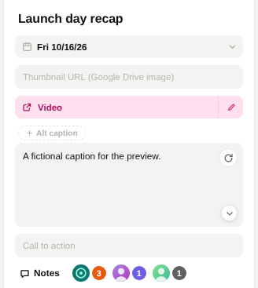
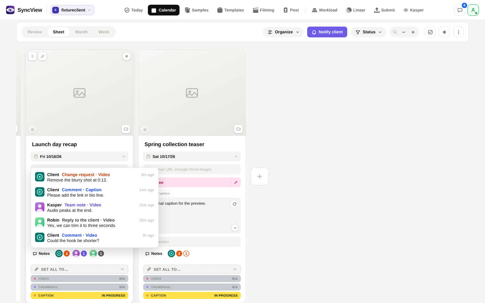
Recommendation: yes, three bubbles at most, then "+N".
1. Card badges
Why it is familiar: a face says who, the coloured number says how many and what kind; a filled number is new, an outlined one waits on you.
2. Hover on a card
Why it is familiar: one line per note with the writer's picture, what it is and the first words; it opens instantly.
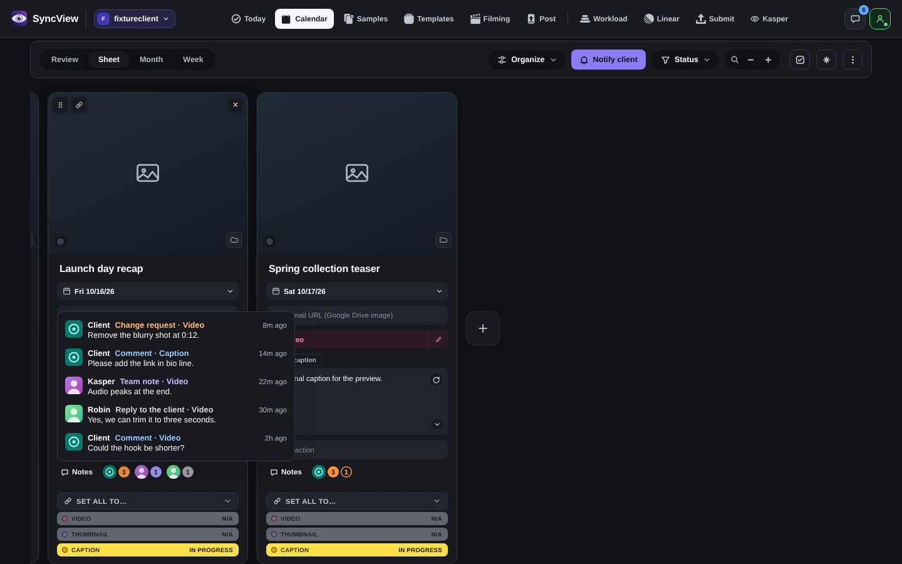
3. Notes on a card
Why it is familiar: it looks like a Slack channel: picture, name, time, message; replies tucked under what they answer; the message box sits at the bottom.
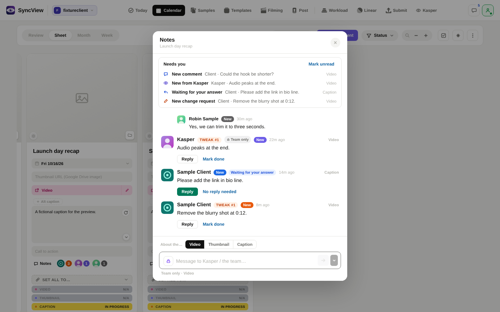
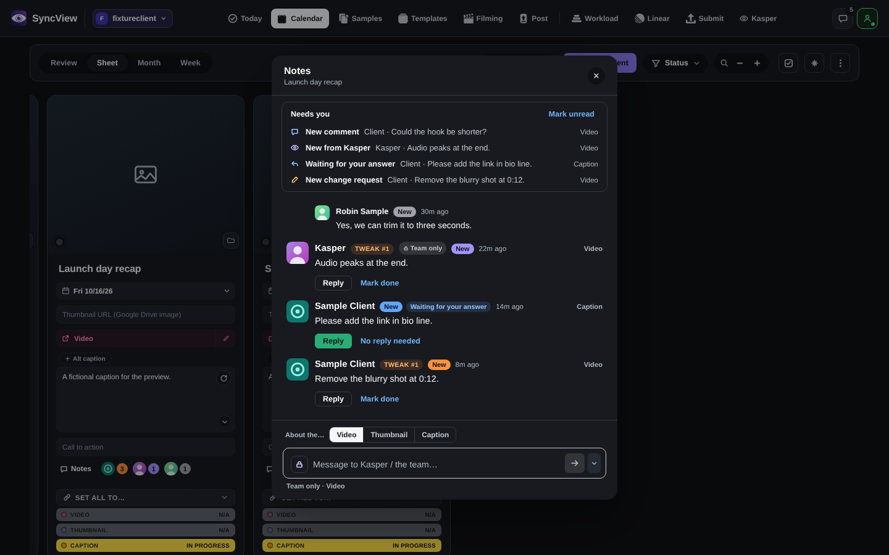
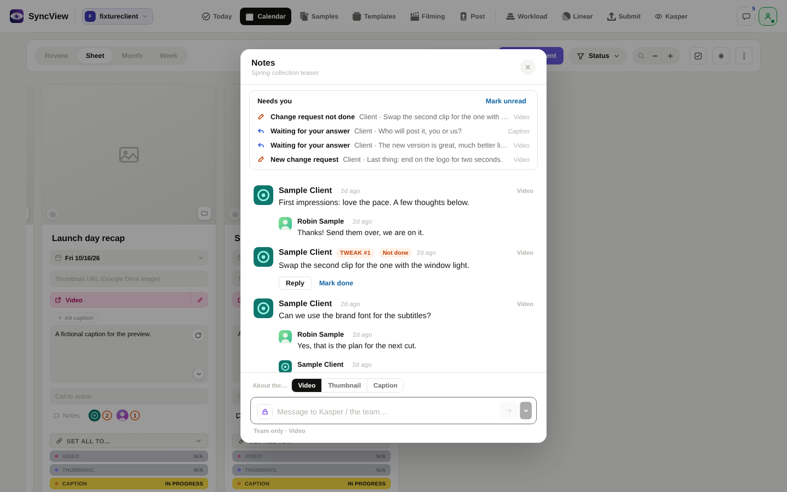
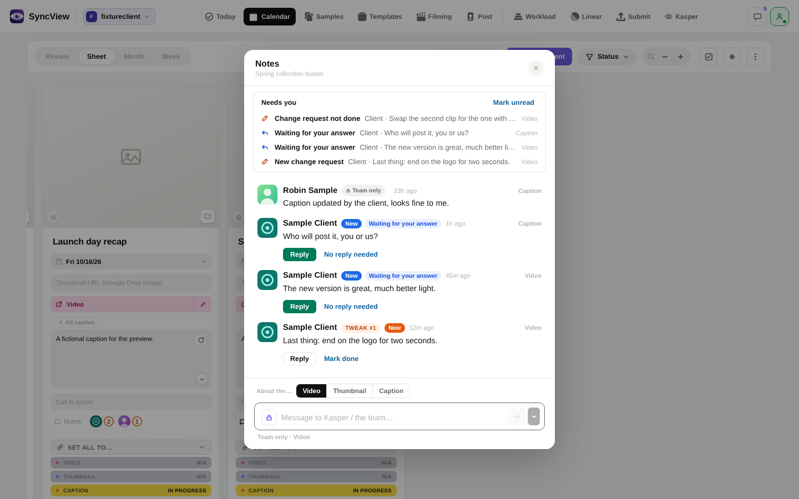
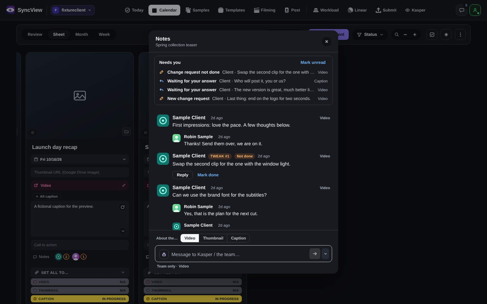
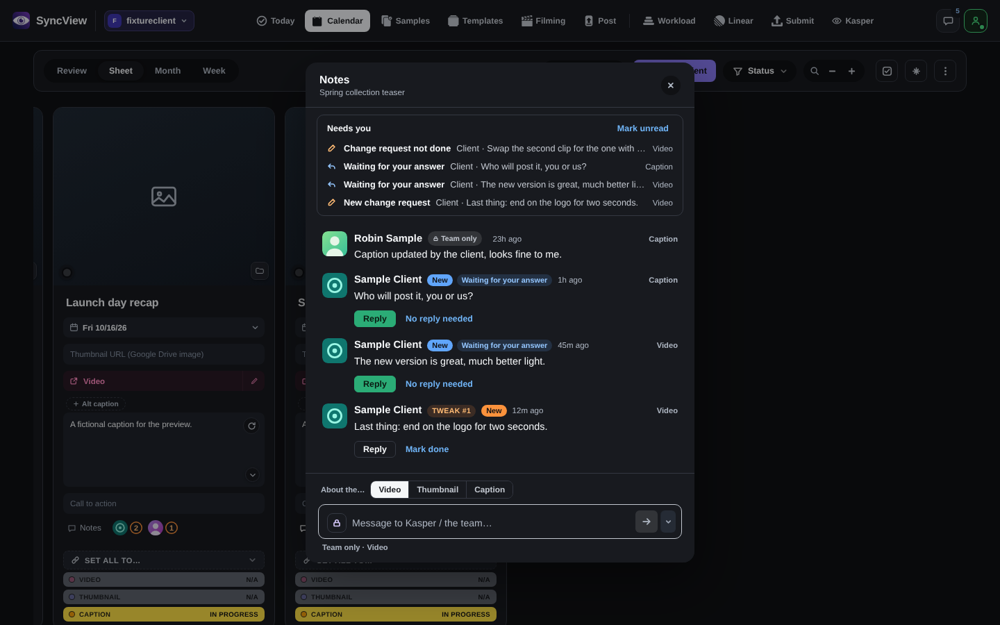
4. The Messages button
Why it is familiar: a round number on the corner, like Slack's, that never moves the icon; hover says what it counts.
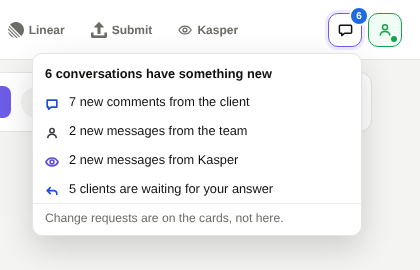
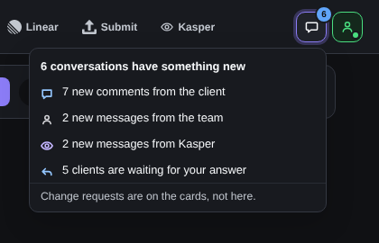
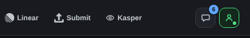
5. The Messages inbox
Why it is familiar: it reads like Slack's list of conversations: picture, name in bold when unread, the last message, and the same people bubbles as the cards.
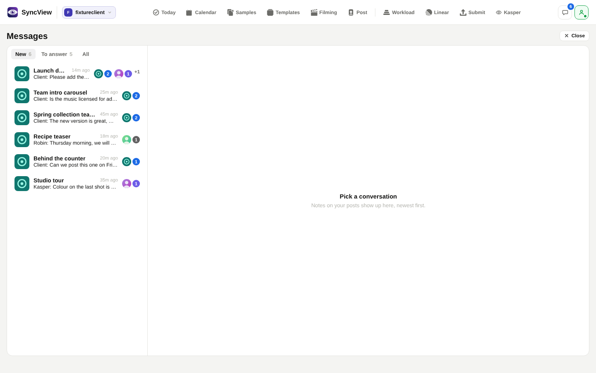
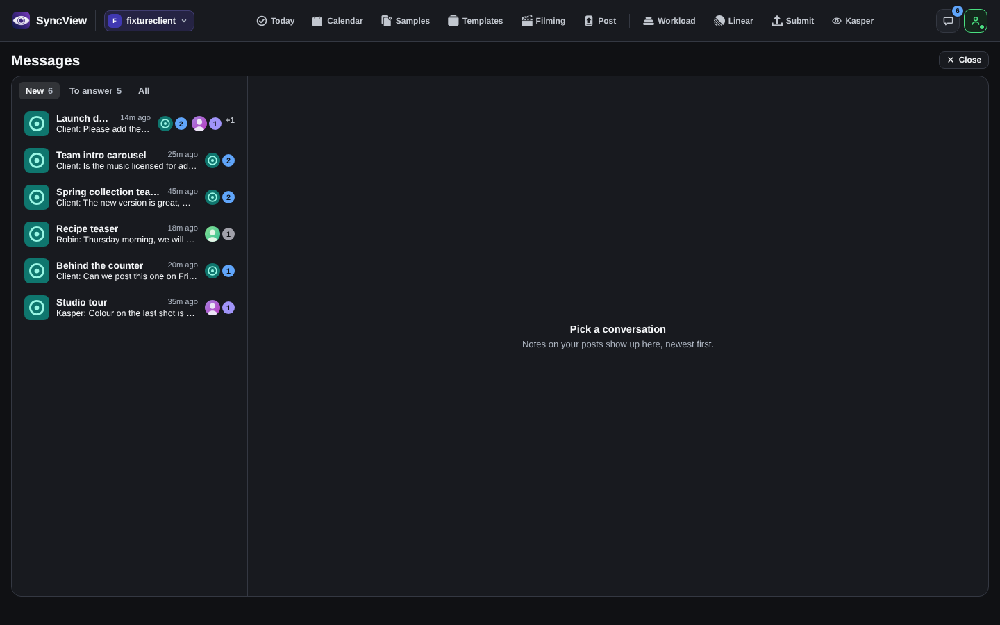
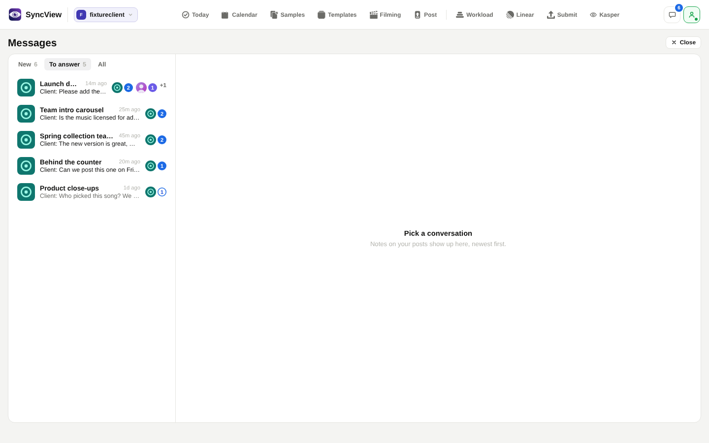
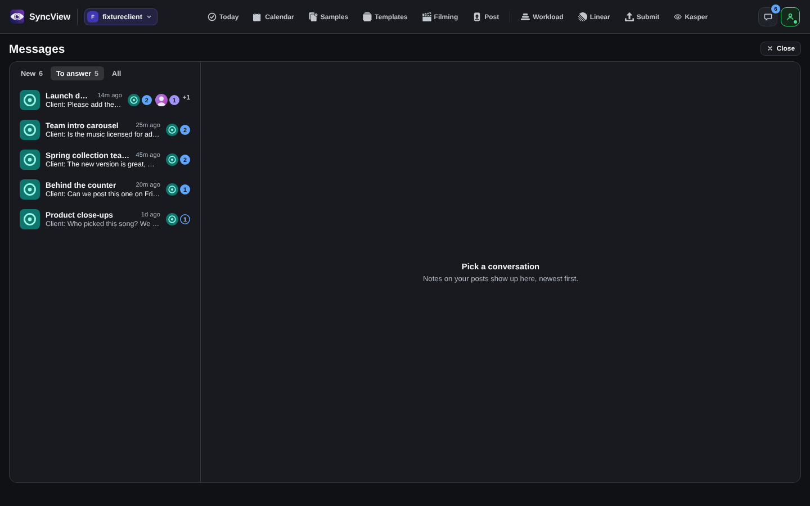
6. A conversation
Why it is familiar: the same Slack layout as the Notes, with a day line between days and the message box at the bottom. A change request is one orange line pointing to the card.
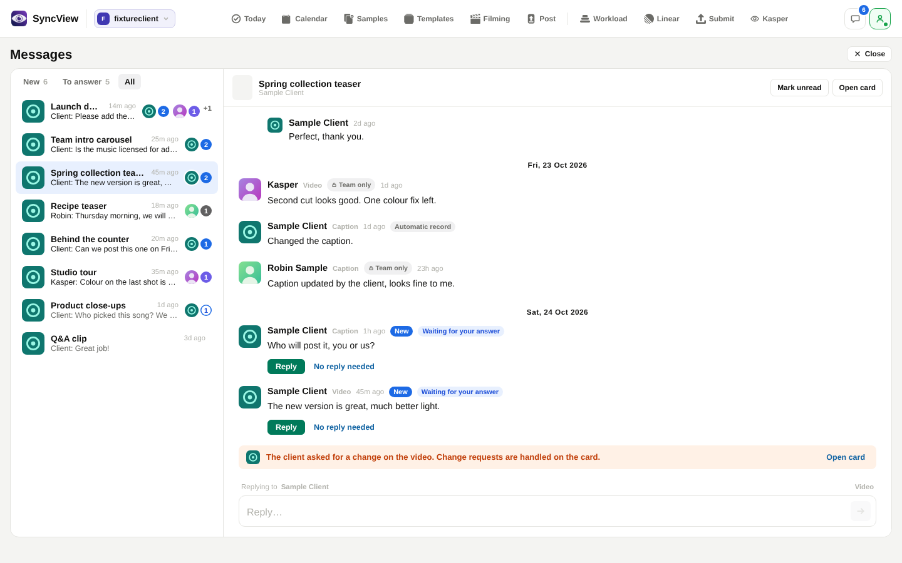
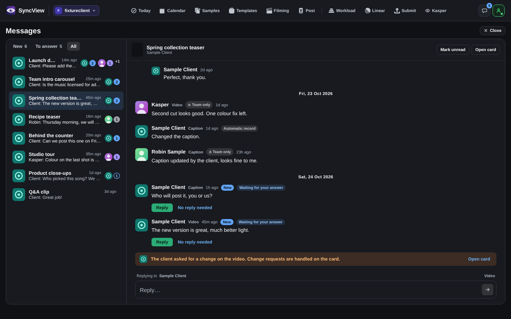
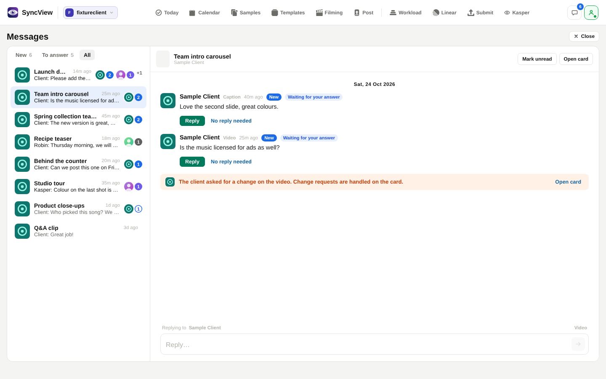
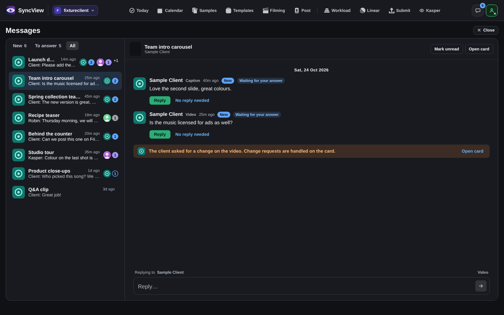
7. For comparison


How these were made: the real page, built from the code on GitHub, served on a laptop with every server answer faked and no live data. A small switch that only the screenshot script loads adds the proposal. Pull request #2299 has the details.